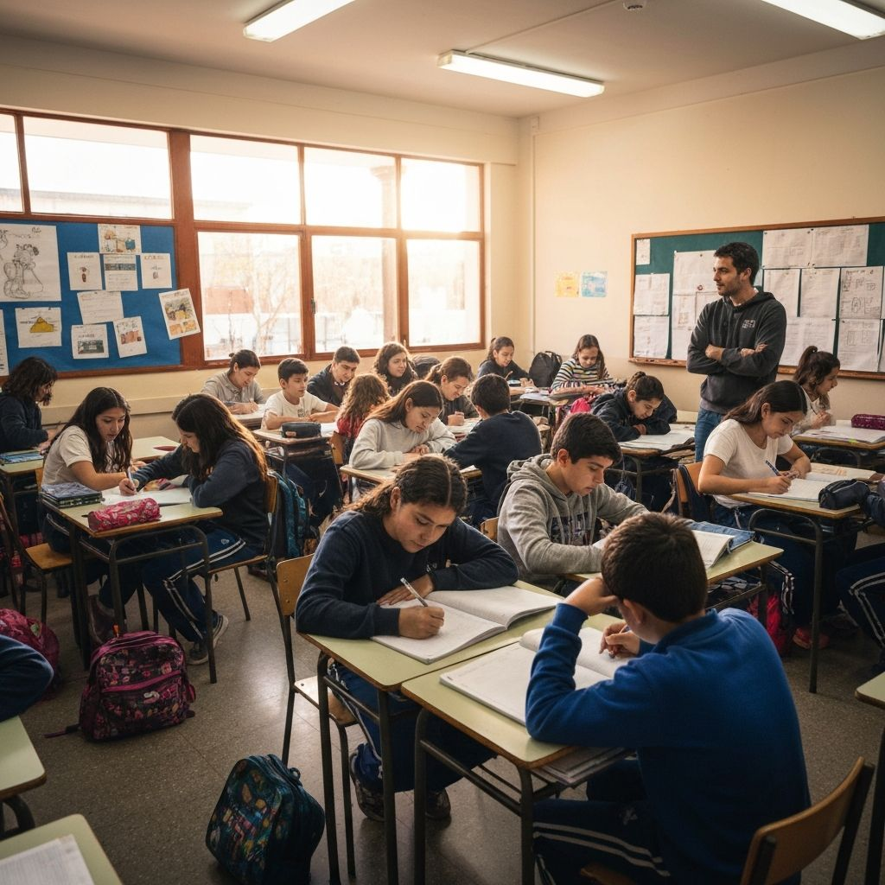
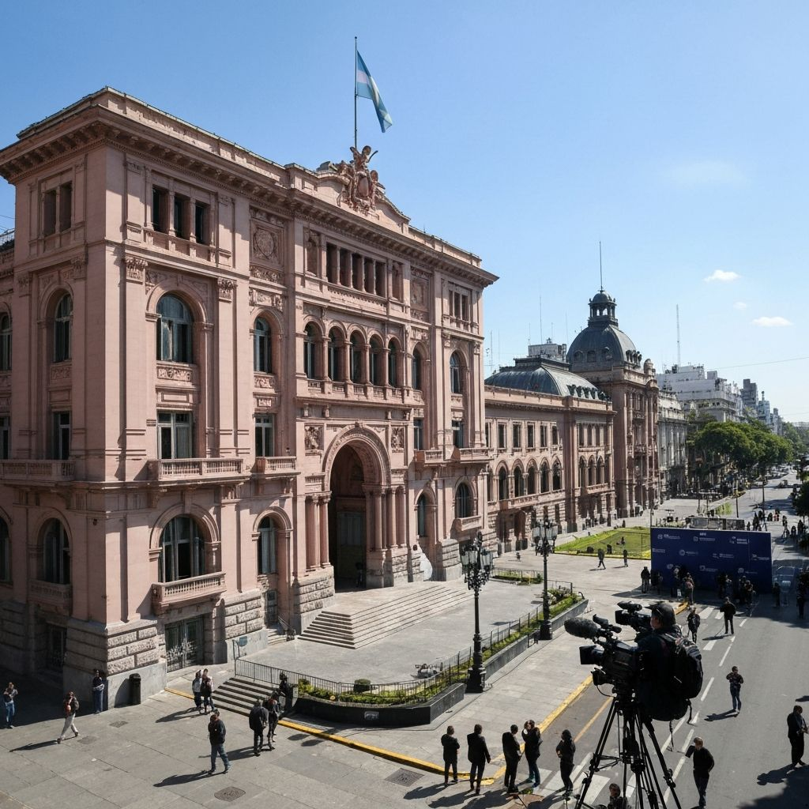
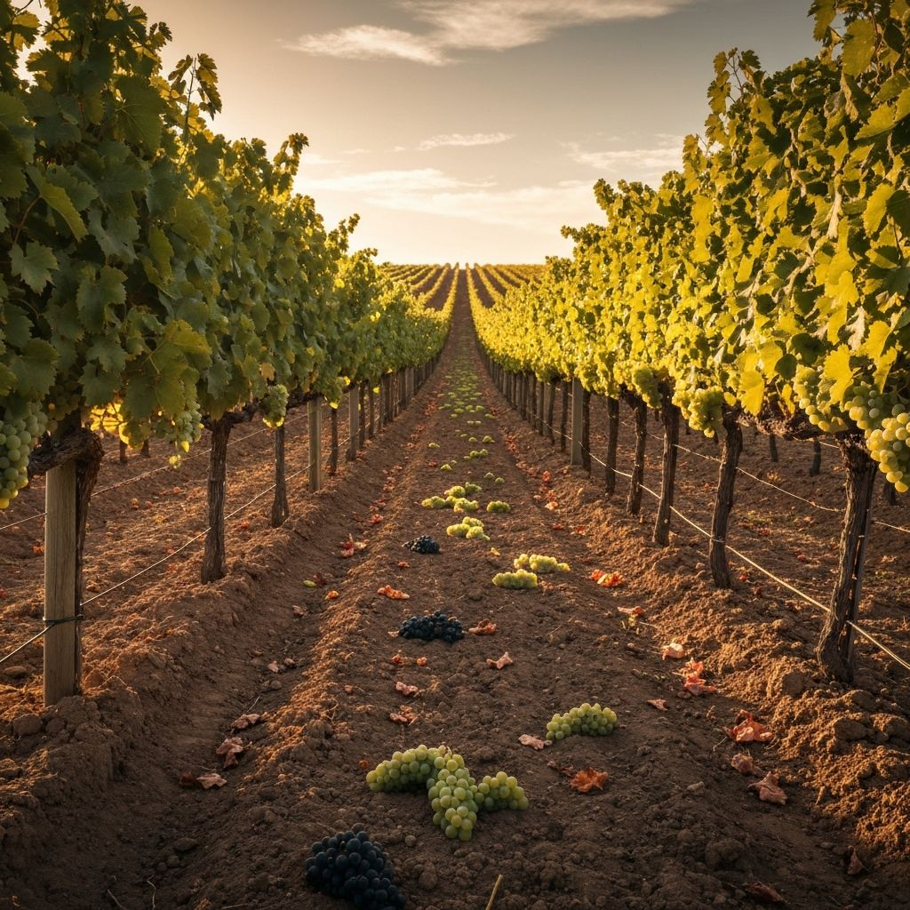
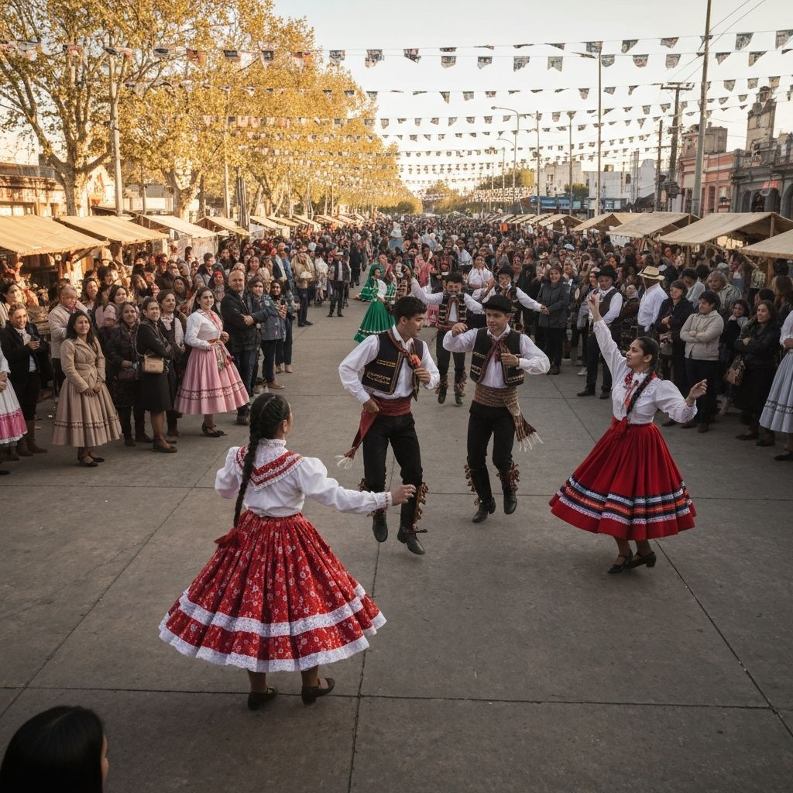
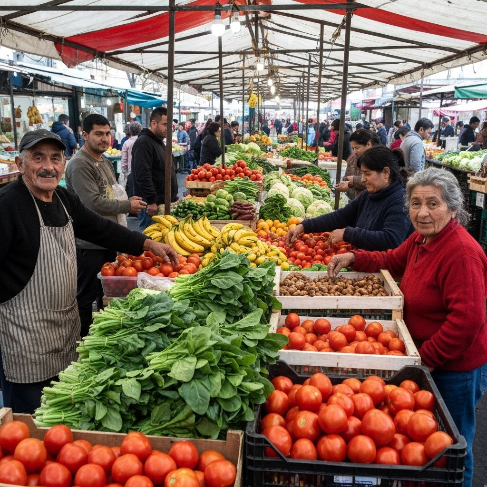

Legislatura aprueba nuevo presupuesto provincial para 2026
Con amplio apoyo legislativo, se aprobaron partidas destinadas a salud, educacion y obra publica.
El diario digital de la verdad
URGENTE: Nuevas obras de infraestructura para San Juan ya en marcha
El gobierno provincial presento un ambicioso plan para potenciar el turismo en las zonas montanosas, con inversion millonaria en infraestructura.
Leer masLas obras del nuevo hospital regional alcanzan un 60% de avance y se espera su inauguracion para finales de ano.
Leer mas
EducacionMas de 15.000 alumnos sanjuaninos acceden a nuevas herramientas digitales gracias al plan de modernizacion educativa.
Leer mas
Con amplio apoyo legislativo, se aprobaron partidas destinadas a salud, educacion y obra publica.
Los distintos sectores politicos discuten cambios en el sistema electoral sanjuanino.



Diario Popular San Juan es un medio informativo digital comprometido con la verdad y la transparencia. Desde nuestra fundacion, nos dedicamos a brindar noticias locales y nacionales verificadas y actualizadas.
Nuestro equipo de periodistas profesionales trabaja dia a dia para mantener informada a la comunidad sanjuanina con rigor periodistico y responsabilidad social.
Creemos en un periodismo independiente, plural y al servicio de la ciudadania. Cada noticia que publicamos pasa por un proceso de verificacion para garantizar la calidad informativa.
Estamos disponibles para recibir tus noticias, consultas y sugerencias